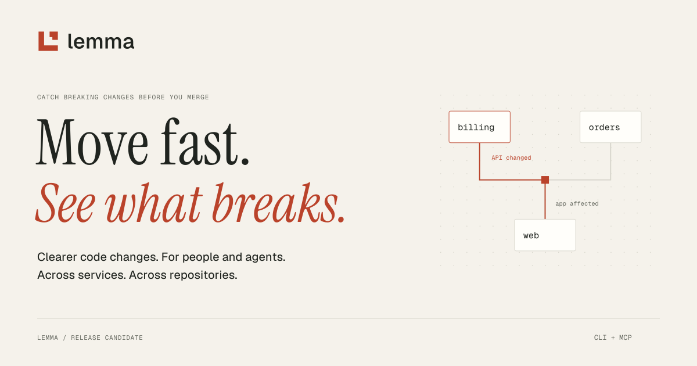
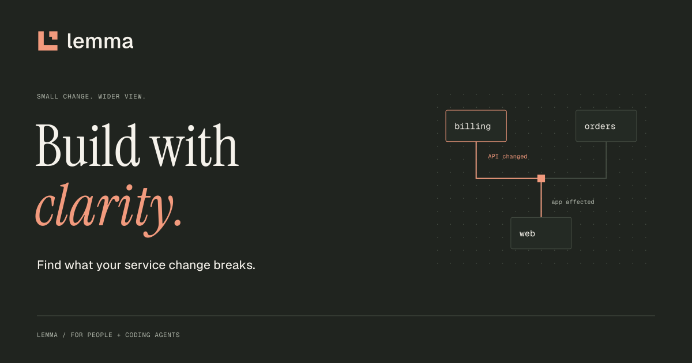
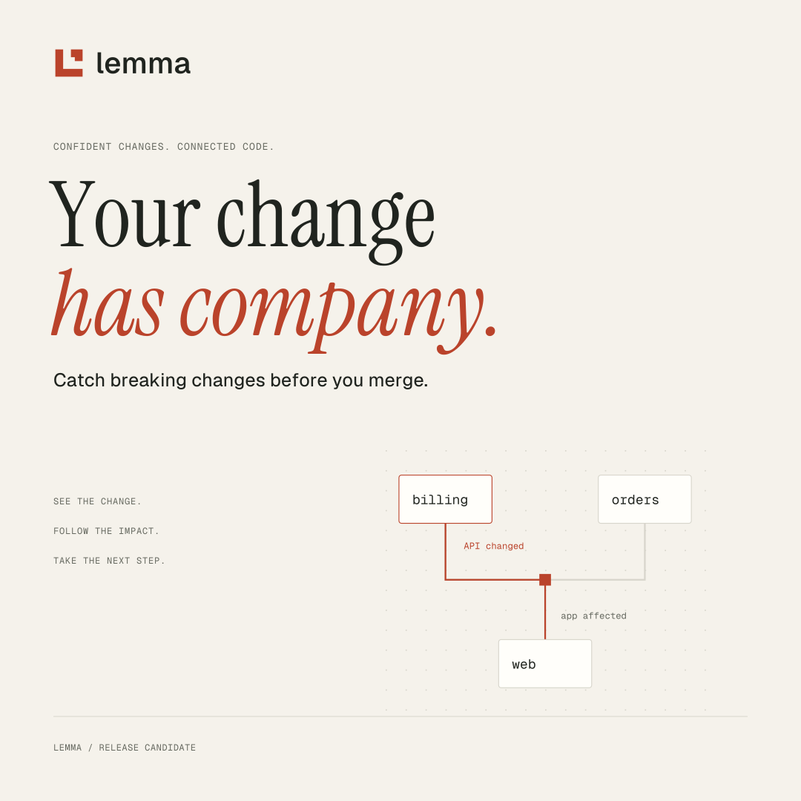
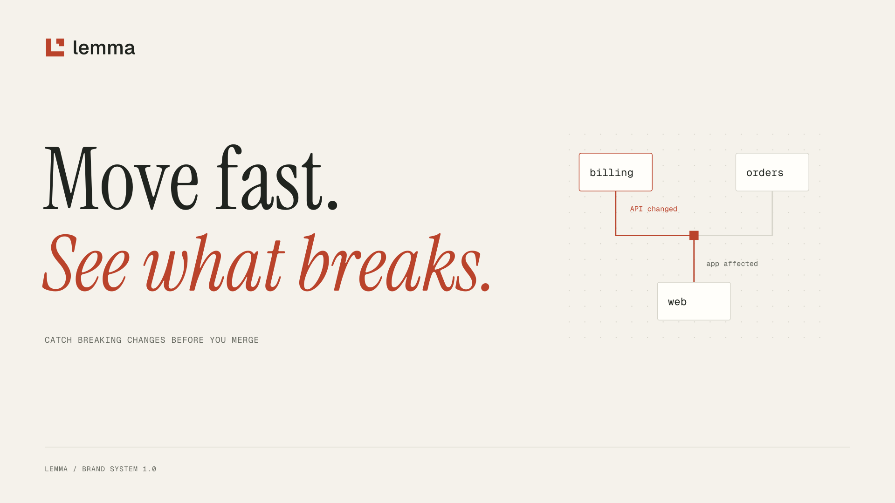
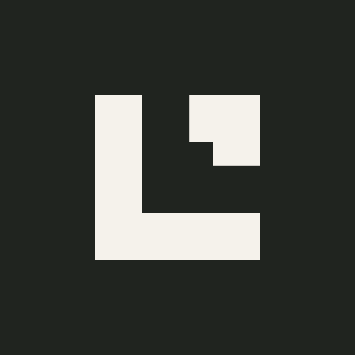

× Violated
A caller reads a removed response field.
The billing service removes receipt_url. The web repository still reads that field from the response.
billing / createCharge → web / checkout
Catch breaking changes
before you merge.
Lemma checks how your services connect, so people and coding agents can change code with clarity.
Make the consequences of a code change easy to see, even when they live in another repository.
Show what changed, what it affects, and where to look. Keep the next action close.
A bold voice, a warm foundation, and a direct line from a change to its impact.
An L-shaped frame and an offset corner give Lemma a simple signature. The open space suggests the relationship between a repository and the system around it.

Keep a quarter of the mark’s canvas width clear on every side. Use the full lockup at 120px or wider; use the standalone mark from 20px. The supplied favicon is optimized for 16px.
Preserve proportions, solid fills, and the relationship between symbol and wordmark. On photography, place the logo on a solid brand surface.
Paper and ink carry the composition. Vermilion identifies the brand and directs attention. Forest is reserved for satisfied outcomes. Click a swatch to copy its value.
Use color with a label. A finding is “violated,” “unknown,” or “stale” in words as well as in color. Semantic tokens adapt for dark surfaces. Approved text pairings and measured contrast live in the guidelines.
The details
make the difference.
The editorial voice.
Headlines, campaign statements, and the occasional pull quote. Sentence case. Plenty of space.
Build with clarity.
ABCDEFGHIJKLMNOPQRSTUVWXYZ
abcdefghijklmnopqrstuvwxyz
0123456789 → ↗ + =
Body copy, navigation, interfaces, and labels.
lemma verify
change.yaml
snapshot: base → head
billing → web
outcome: violated
Commands, source locations, and technical metadata.
A lightweight component foundation for the website, docs, and future interfaces. Every example below uses the shared tokens. Switch the dark preview to inspect both themes.
One primary action per group. Use links for navigation.
“Unknown” never becomes a reassuring green check.
$ lemma verify change.yaml
# Check a change against its manifest.The billing service removes receipt_url. The web repository still reads that field from the response.
This is a designed finding component using the quickstart’s billing and web scenario. It is an illustration, not captured CLI output. Real findings must show their own source locations, revisions, and coverage.
Describe the services that provide and call your operations.
Inspect app affecteds before the change merges.
Query symbols and references through the CLI or MCP.
A coordinated set for repository pages, social launches, profiles, and presentations. SVG masters have outlined typography. PNG exports are ready for upload.





The visual language is documented alongside the assets. Design choices, copy, component behavior, and implementation all have a home.